Z Itálie do Řecka (2. cesta)
Kterak synek český do Athén na kole dojel.
Minulý rok jsem si pořídil první kolo, na které jsem narazil, a dojel na něm nejkratší možnou trasou až k moři, do Itálie, do Terstu. V zimě mě napadlo, že by z toho vlastně mohl být hezký celožitovní projekt. Každý rok popojet o pár tisíc kilometru na východ a pokud učebnice zeměpisu nelžou, měl bych se za pár let vrátit zase do Prahy. V některých oblastech jsem trochu nedůvěřivý a raději si s dovolením ověřím sám, jestli je opravdu Země kulatá.
Letos tedy z Itálie do Athén.
Ale proč proboha na kole??? Já vlastně kolo moc rád nemám a pokud můžu, tak se mu vyhýbám. Pro tohle cestování je ale kolo nejlepší. Je dost rychlé na to, abych mohl během dovolené ujet alespoň 2000 km a poznal mnoho míst, ale zároveň dost pomalé na to, abych každou část cesty prožil. Všude se s ním dostanu, všude se dá opravit. Ideální do každé rodiny.
A proč do Athén? Byl jsem tam před cca 15 roky a město mě naprosto okouzlilo. Ať se dělo, co se dělo, Athény prostě musela být cílová destinace.
O něco obtížnější bylo naopak vybrat startovní destinaci, do Terstu se totiž tak snadno dostat z Prahy nedá a tahat se s 35 kg zátěže vlakem není úplně to, o čem bych ve svých volných chvílích snil. Rozhodl jsem se tedy doletět do italské Boloni a těch 300 km do Terstu si dát "na zahřátí".
120 hodin příprav konečně u konce. Tour de Europe začíná!
Rozbalování kola po z cestě letadlem připomíná experiment Schrödingerovy kočky. V krabici může být buď jízdní kolo, nebo šrot. Takže chvilka napětí ...
... a tradáááá, kolo je připraveno! Nefunguje jen přední přehazovačka a u zadní fungují jen 3 převody. To jde.
Takže vzhůru k lepším zítřkům! Vzhůru do Benátek!

„Začátek června je ideální. To jsou ty teploty tak akorát.“
Když byly vypáleny Lidice, několik měst různě ve světě změnilo svůj název na Lidice, jiná města tak pojmenovala třeba ulice. Shodou okolností jsem se při letu do Boloni na film Lidice díval a dnes, aniž bych to plánoval, jsem na takto pojmenovanou ulici narazil.
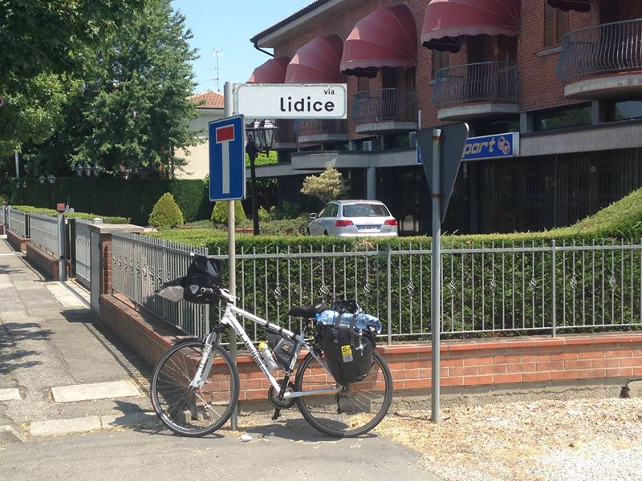
První den byl hrůzostrašný a jednoznačně nejtěžší za celou dobu. Kromě tropických veder pořád něco nefungovalo. Kolo pískalo, vrzalo, myslím, že na mě i promluvilo, ale to byly možná jen halucinace z vedra. Neříct o tom nikomu, asi bych se na to vykašlal a jel domů. Ale přeci jen, vyhlásit, že se chystám na 2,5 tis. km a po 40 km říct, že už nemůžu a jedu domů...:-D No, musel jsem pokračovat.
A tak jsem po dvou dnech dorazil konečně do Benátek. Velmi chytře jsem si na přejezd zvolil neděli, kdy je v Itálii vše zavřené. Navíc zde jsou všude samoobslužné benzinky, kde se nic studeného koupit nedá.
Benátky byly úžasné. Jedno rozhodně z nejhezčích míst, kde jsem kdy byl. Jak se občas objevují takové ty seznamy míst, které by člověk měl za svého života navštívit, tak Benátky by měly být někde hodně vysoko. Město je propletené vodními kanály, přes které je postaveno na 450 mostů. Až mi bude 70, přestěhuji se sem.
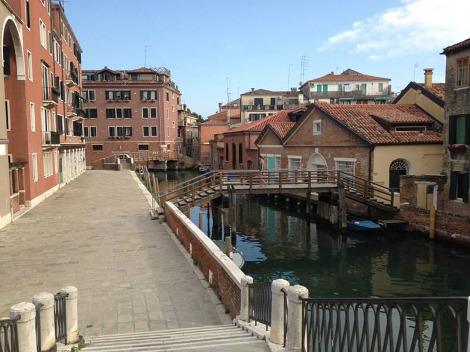
Benátky jsem měl hezky naplánované. Až na jednu drobnost... Jsou absolutně nepřístupné pro cyklisty. Přes tyhle mosty se s kolem dá dostat jen těžko. U některých jsou rampy pro vozíčkáře, které lze využít i pro kolo, ale to je jen výjimečné. Já si zvolil hotel, který byl na úplnem konci oproti místu, kde jsem přijel, snad nejdál, jak to jen šlo (Murphy!, takže další 3 hodiny trvalo dostat se k noclehu. Nezřídka se tak stávalo, že jsme s vozíčkáři smutně stáli před nepřístupným mostem a přemýšleli, jak se přes něj dostaneme.

Benátky je též město zamilovaných. Kdo neobjímal parnerku/partnera, objímal alespoň okolní sloupy. Tak schválně, ze kterého města pocházel Giacomo Casanova?
Můj hotel Alla Salute.
Noční prohlídka města.
Kromě vodních kanálů jsou zde tisíce úzkých uliček, které se často ukážou být slepými. Hledání hotelu bez navigace je tak velký zážitek.
V Benátkách jsem strávil 40 hodin a pokračoval dále 145 km do Monfalcone, což byla do té doby nejdelší vzdálenost, kterou jsem kdy za jeden den zajel.
Kromě jezdeckého rekordu jsem překonal ještě jeden rekord. Celý den jsem neměl téměř žádné jídlo, takže jsem přišel do první restaurace a objednal si pizzu. Když jsem ji snědl, objednal jsem si hned druhou. Servírka se mě několikrát zeptala, zda ji chci zabalit a byla poměrně překvapená, když jsem řekl, že ne, že si ji chci zase sníst tady a ať dělá, protože mám hlad. Když jsem snědl druhou pizzu, stále jsem jaksi neměl dost a tak jsem si objednal i pizzu třetí. To už byla mírně v šoku, leč bez většího remcání ji přinesla a po očku sledovala, co s nimi dělám, jestli je opravdu jím. No a když jsem dojedl třetí pizzu, neměl jsem stále dost a objednal jsem si tedy i pizzu čtvrtou. To už brala s úsměvem a krátce po objednání přišel kuchař a vyfotil si mě.
„Tady? Tady se bicykly nekradou, klidně ho můžete nechat přes noc venku." Měl pravdu, tady se kradou jen kola.
Základ celého trip byla Fanta. Moje spotřeba byla tak 4 litry na 100 km, takže jsem byl dražší, než kdybych jezdil na benzín. Můj dietolog by s tím určitě nesouhlasil a zubař už vůbec ne, ale bez vychlazené Fanty, bez bublinek, bez cukru bych to nezajel.
Terst. Konečně. Šestý den tripu jsem se dostal až ... na start.
NH Trieste, tady přesně to minulý rok končilo. Takže jsem konečně na začátku, unavený a zničený. A můžu začít.
Za Terstem opouštím Itálii, přejedu několik desítek kilometrů Slovinska a v podvečer vjíždím do Chorvatska. Od Terstu začalo to, o čem jsem si myslel, že tak často nepotkám: neustálá stoupání a klesání. Myslel jsem si, že když jedu podél pobreží, tak by to měla být vesměs rovina, takže jsem vlastně ani nijak nestudoval profil trasy. Denně jsem tak nastoupal minimálně 600 metrů, což možná nezní nijak drasticky, ale já byl bez možnosti měnit převody, s cca 30 kg zátěže, ve 30+ stupních a bez tréninku.
Přespání jsem hledal povětšinou přes booking.com, aplikaci, bez které bych celý ten trip nezajel a která pro mě byla základem. V ní lze nalézt různé druhy ubytování a hodnocení uživatelů. Zajímavé je, že hodnocení vůbec neodpovídá ceně, a tak lze nalést naprosté poklady, kdy ubytování stojí pár korun, ale přesto má vysoké hodnocení. Vysoké hodnocení znamená třeba to, že když jsem dorazil večer do ubytovny/penzionu, majitel se na mě podíval a jen řekl: "Potřebuješ pivo" a šel pro něj. Tohle se mi stalo třikrát. Nízká cena byla často dána tím, že bylo ubytování ve špatně dostupné lokalitě, což mi ale díky kolu nevadilo. Tady v Rupě jsem sice pivo nedostal, ale majitelka mě alespoň postříkala hadicí.
Konečně první koupání. Minulý rok jsem sice u moře byl, ale v moři nikoliv. Sedmý den cesty jsem si tedy konečně mohl užít moře!
Přespávám obvykle v různých rodinných penzionech nejnižší možné kategorie, což má tu výhodu, že je vše osobní (oproti anonymním hotelům. Majitel mě občas uvítá vínem nebo pivem a bavím se s ním o všem možném. Tenhle týpek na fotce stál ale obzvláště za to. Včerejšek jsem si špatně naplánoval a do Senj přijel až téměř za úplné noci. Google mapy mě měly zachránit a ve tmě mě dovézt do penzionu. Cca 5 km před Senj ke mně přijel nějaký motorkář a ptá se, zda nehledám ubytování. To by se hodilo, ale když už jsem měl rezervaci, takže jsem odmítl. Navíc vypadal dost divně. Pokračuji dále a konečně v tuhé tmě najdu místo, kde měl stát penzion. Zasvítím si baterkou a vidím, že přede mnou není vůbec nic. Prázdno. Skvělé, snad poprvé nutně potřebuji GPS a je mi úplně k ničemu. Tak tedy volám do penzionu. Po nějaké době mi konečně někdo bere telefon. Jenže neumí anglicky, mluví jen chorvatsky a po dlouhých minutách marných pokusů domluvit se to vzdávám. Tak dál. Za absolutní tmy chodím dům od domu, zvoním na zvonky, snažím se někomu vysvětlit, že hledám penzion Guest House Julia, musí být někde poblíž. Nikdo ale neumí ani slovo anglicky. Až po půl hodině narazím na mladý pár a dívka pochopí, co hledám, a tak mě odvede o několik ulic dále. Tam se snažím vysvětlit, že s nimi budu bydlet a z náznaků pochopím, že majitel přijde za chvíli. Za 15 minut fakt někdo přijíždí na motorce a ja zjišťuji, že Božo, tenhle motorkář, byl ten stejný motorkář, který se mě ptal na ubytování před cca 2 hodinama...
První týden, 527 km + den volna v Boloni a Benátkách.
Po týdnu cesty jsem si dal den volna určeného ke koupání. Když jsem hledal nějaké vhodné místo ke slunění, narazil jsem na značku FKK, což znamená, že jsem na nudistické pláži. A tak jsem se rozhodl osmý den strávit v úplné symbioze s přírodou.
Kdybyste náhodou v Senj hledali nudistickou pláž, tak je hned u kostela. Církev v Chorvatsku je docela pokroková.
Jídlo k večeři jsem si vybíral čistě náhodně. Jednak byly jídelní lístky často v jazyce, kterému jsem nerozuměl, ale taky rád riskuji. A tak zatímco někdy to byla výborná volba ...
... jindy to byl tragický omyl. Nevěřím, že tohle někdo jí dobrovolně.
V Chorvatsku ochranáři zvířat vybojovali pláže určené jen pro domácí mazlíčky, kam lidé nemohou. Třeba tady na té pláži se opalovali dva rotvajleři. Z pochopitelných důvodů jsem si raději vyfotil značku a ne opalované objekty.
Nekonečné chorvatské přejezdy.

Devátý den cesty jsem poprvé nenašel ubytování, které jsem měl přes Booking objednané. A tak jsem musel najít alternativní místo pro přespání. Před setměním se nade mnou slitovala jedna bezzubá paní a poskytla mi azyl u ní doma. Když jsem už téměř za tmy ukládal kolo o garáže, všiml jsem si, že jsou na stole nějaké rostlinky. Za tmy to vypadalo jako konopí a já se těšil na hezký večer, ale nakonec to byly nějaké jiné bylinky. Tak snad příště.
Ach ty jižanské národy...na stromech šlo nalézt kromě dámských kalhotek i nějaké ty podprsenky.
Při při přejezdu mostu Maslinica mě napadlo, že už toho mám dost a rozhodl jsem se, že z mostu skočím...
...a vyzkouším si bungee jumping. Nakonec jsme se ale s organizátorem nedomluvili. Tak příště.
Islám v Chorvatsku NECHCEME!!!
Kdepak budu dnes spát? Rozhodl jsem se využít kemp, který před několika lety založil náš pan prezident. A musím říct, že tam bylo opravdu, ale opravdu hezky.
Rozhodně tam teda bylo líp než v apartmánu, který mi doporučil Google.
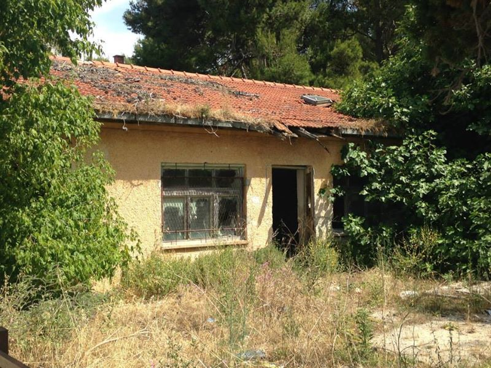
Na konci jedenáctého dne jsem dojel až téměř ke Splitu. Z části to bylo díky tomu, že jsem se po dlouhém odmítání donutil ke koupi elastických cyklistických kalhot. Cokoliv elastického na sobě nesnáším a odmítám, ale prostě už nešlo déle ignorovat jisté potíže, o kterých bych se tady nerad rozepisoval, a tak přejděme raději na další fotku.
Tvl půjč Chorvatovi telefon... #zMehoAtlasuHub
Makarská riviera, konečně! Do té doby ty pláže nejsou nic moc. Během měsíce jsem vlastně mimo ostrovů projel všechny turistické destinace a vím, která místa jsou nejlepší. Tipy prodám za těžké love.
Jedna z úžasných věcí na cykloputování je, že se dostanu na místa, kde žádní turisté nejsou, protože jsou pro ostatní těžko přístupná.
Celých 35 dní bylo hezky až na jediný den, kdy lehce pršelo. Zatímco já musel jet v dešti, hned na sousedním ostrově bylo celý den hezky. Já bohužel jel pod tím šedivým pásem.
Vjezd do 4. země na mé letošní cestě. Bosna má cca 10 km pás moře a zde jediné město Neum.
Jako z pohádky. Foceno někde kousek od Dubrovníku.
Velké zaoceánské parníky. Já je viděl živě poprvé v životě.
Zajímavé architektonické řešení. Historické centrum a přístav je přesně za tím stromem. Dalekohled byl postaven na jediné místo široko daleko, kde se nedá podívat na druhou stranu.
V Boloni jsem si řekl, že silou vůle dojedu alespoň do Splitu. Když jsem přijel na letiště do Splitu, rozhodl jsem se, že dojedu ještě do Dubrovníku, odkud se dá taky dobře dostat domů. V Dubrovníku jsem hodinu seděl na letišti a přemýšlel jsem, zda jet dále. Ještě jsem nebyl ani v polovině a už to bylo fakt dost. Kolo bylo rozbité na cucky, musel jsem každých 5 km pravidelně zastavovat a utahovat rozbité závity. Praskl nosič, přehazovat už nešlo vůbec, takže už jen jeden převod. Brzdové destičky obroušené, zadní plášť sjetý až na duši a hrozilo každou chvíli protržení. A příšerné vrzání a pískání, které už bylo slyšet na stovky metrů okolo, i přes veškerou mazací snahu to nešlo odstranit. Leč z boja se neutíká, a tak tedy hurá do Černé Hory!
Po 1124 km jsem kousek od hranic s Černou Horou a po nezbytné dvoudenní dovolené na dovolené tam fakt asi vjedu.
Na přejezdu hranic jsem strávil asi půl hodiny. Byl jsem zvyklý na to, že mi občas někdo něco nabízí, takže jsem už automaticky říkal „no, thanks". Takže když přišel celník a řekl „bicycle control", tak jsem mu jen řekl „no, thanks" a jel jsem dále...To bohužel nezůstalo bez odezvy, a tak na mě celníci začali řvát, ať hned zastavím, že bude bicycle control.
Snažím se naznačit, že klidně ty věci z brašen vyskládám, ale jako sorry, zpátky to tam rvát nebudu, to budou dělat oni. Možná to nevypadá, ale nacpat tyhle věci do brašen trvá docela dost dlouho. Zkouším americký úsměv, zkouším psí prosebný výraz, zkouším výraz „nerozumím, mluvím jen česky", nic nepomáhá. Pomohl až zdejší šerif, vrchní kápo, který to tam evidentně měl celé pod palcem a konečně mě pouští dále.
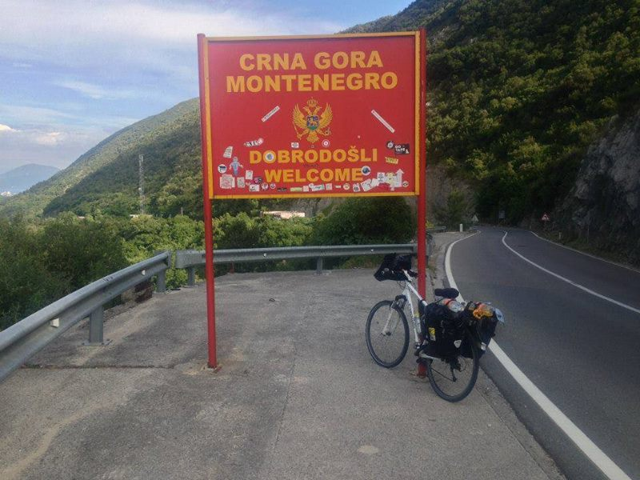
Černohorci troubí. Troubí, když předjíždějí a troubí, i když vás míjejí v protisměru. Když Černohorec něco neví, tak zatroubí. Zatroubí ale i tehdy, když to ví. Černohorci troubí ať je hezky nebo prší, ať jsou hladoví nebo sytí, ať jsou zamilovaní nebo po rozchodu - to pak ale troubí trochu tišeji. Když se malé Černohorče narodí, tak nejprve udělá "tuuuuuuu tuuuuuuu" a pak teprve začne brečet.
Jinak foto je z typického černohorského duty free shopu.
Luxusní hypermarkety v Černé Hoře. V každém hypermárketu je vedle pokladní ještě jeden člověk, který nakoupené zboží vkládá do tašky. Vše ok, ale ta hrubka v názvu...!
V Černé Hoře jsem si udělal jednodenní pauzu v Budvě, největším turistickém centru v Černé Hoře
Centrum je obrovské, tisíce lidí na plážích, stovky různých atrakcí. Pro rodiny s haranty ve věku 8 - 15 musí být Budva super, já ale podobná místa moc nemusím.
Nicméně mají tady i Eifelovku.
Po dvou týdnech jsem změnil rasu a z bělocha se postupně stával černochem.
Spal jsem většinou v místech s nejnižší cenou, což znamená, že člověk třeba v koupelně narazil na přetržené dráty elekrického vedení.
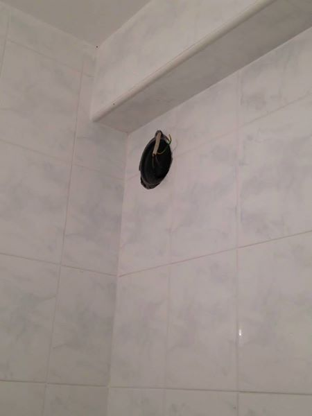
Jeden z tajných tipů pro dovolenou vám dám zadarmo.
Není zač!
Přiznávám, tady jsem byl už trošku v háji.
Za celou cestu jsem viděl stovky kostelů a mešit, tenhle byl asi nejhezčí.
A je to tu, stačí přejet tyhle hory a jsem v Albánii. Když jsem do hor vjel, hned na jejich začátku mě zastavil jeden potetovaný tlouštík s dodávkou a nazačoval, že mám vlézt do auta. Vysvětlil mi, že přede mnou je nehezké stoupání (bylo a že mě sveze. Ne že by se mi nechtělo, ale pak už bych nemohl říkat „dojel jsem na kole z domu až do Athén", tož jsem pokračoval svépomocí. Nicméně od opuštení posledního turistického centra v Černé Hoře mě až do hranic mezi Albanií a Řeckem provázela neustálá snaha snad všech jakkoliv mi pomoci.
„Co čumíš, meeee, to jsi ještě nikdy, meeee, neviděl kozu, meee, meee, meee???!!!“
A je to tu. Po 17 dnech jsem až na hranicích s Albanií. Co tam na mě asi bude čekat?
První dojem byl hrozný. Mnohem horší, než jsem si původně myslel. Za hranicemi je to sešup o 100 let zpět. Po zemi se válejí mrtvoly zvířat v různých stadiích rozkladu. Kolem jsou malé rozpadlé domečky, u kterých z oken čouhá sláma. Kolem cest jsou aleje z odpadků. Všude je hrozný smrad. V dálce je slyšet svolávání k modlení z mešit. Proti mě jezdí auta v protisměru, v dopravě vládne anarchie. Kolem běhá spoustu na smrt vyhublých a vystrašených psů.
První den v Albánii, po Moldavsku nejchudší zemi v Evropě. Rozstřílené značky jsou asi to první, co člověka zaujme. Jak mi pan domácí vysvětlil, ve 12 dostane Albánec svoji první pistoli. Když se pak někde postaví nová značka, tak hned jak přijdou děti ze základky domů, berou pistole a jdou střílet. Je to taková hezká tradice. Prostě to není jako u nás, kdy mládež furt vysedává na Facebooku, tady se ještě lidi umí normálně bavit.
První noc v Albánii nocuji v jednom z větších albánských měst. Po příjezdu do města zjišťuji, že městem nejsem schopen projet. Sedím u kruhového objezdu a snažím se najít algoritmus pro jeho průchod. Pokud jste viděli někdy, jak vypadají křižovatky v Dilí v Indii, tak tady to vypadá úplně stejně. Nejde poznat, zda se tady jezdí v pravém pruhu nebo v levém jako v Anglii, tady si každý jezdí, jak chce. Modlím se a vjíždím středem jako král. Krátce na to mě mezi sebe přiskřípne autobus a nákladní auto. Oba řidiči se usmívají. Je mi jasné, že dnes zemřu.
Puch neustává ani v Shkoderu. Všude jsou odpadky. Ne že bych byl nějaký ekolog nebo něco podobného, ale když jsem viděl Albánku, jak nesla odpadky a pohodila je na kraj silnice, způsobilo mi to fyzickou bolest. No tak, Albánie, come on!
Jedna ze zajímavých věcí na Albanii je, že skoro každý má Mercedes. Říká se, že 50% všech aut v Albanii jsou Mercedesy. Ti, co Mercedes nemají, mají alespoň koňský povoz. Když jsem se lidí ptal, jak je možné, že mají všichni Mercedes, tak mi bylo řečeno, že to jsou fakt dobrá auta. Prostě Albánci si potrpí na kvalitu, no.
Když jsem projel městem, našel jsem konečně moje ubytování pro dnešní den.
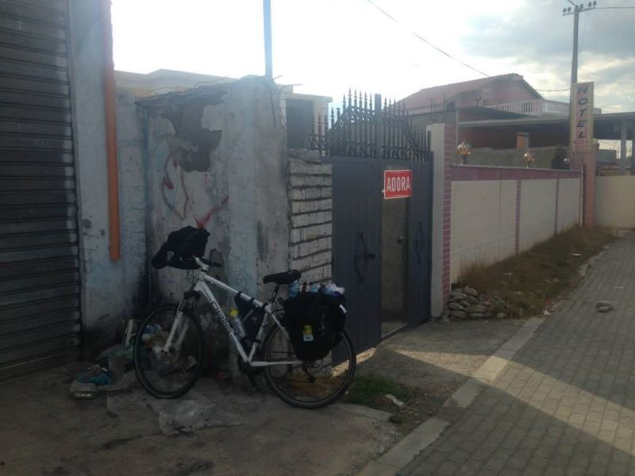
Večer jsem se byl podívat do města a po prvním dni v Albanii mě nepřekvapilo, že nejoblíbenější cestování kancelář zde je Emigrant travel.
Pohled na osvětlené noční velkoměsto. Zde se mi stal asi nejvážnější problém za celou dobu. Když jsem šel tmou do ubytování podle GPS, spadl jsem do kanálu. V chodníku byla metr krát metr díra dva metry hluboká. Jen tak.
Dojem z prvního dne nejlépe vystihl tenhle pes. Když jsem vyjel ze zatáčky ....
... ležel uprostřed cesty na retardéru a usilovně se snažil nedívat na blížící se objekt, který ho nejspíš srazí. Když jsem ho objel, postavil se a lehl si na místo, kterým jsem projel. Když přijelo auto a objelo ho zleva, zvedl se a šel si lehnout doleva. Když ho další auto objelo zprava, zvedl se a šel si lehnout doprava. Podle mě chtěl spáchat sebevraždu.
No a pak, další den, se mi v Albánii začalo líbit.
I kdyby byl člověk slepý, hluchý a bez končetin, stejně by musel poznat, jak se změnilo prostředí. Albánci jsou totiž extrémně přátelští. Pořád chtěl někdo pomáhat, pořád na mě někdo mával, pořád na mě někdo troubil, pořád mě někdo zdravil. Pořád. Pořád. Pořád. Žádná jiná země na mé trase se v tomto Albánii ani nepřibližuje.
Ueli sice nebyl Albánec, ale dlouho v Albánii žije. Je ze Švýcarska, kde pracoval ve velké dopravní společnosti na vyšší manažerské pozici. Díky své práci se dostal na čas do Albánie a když se vrátil zpět do Švýcarska, s prací po čase sekl a rozhodl se, že změní život. A tak se přestěhoval do Albánie, otevřel si malý apartmán a pomáhá lidem mimo Albánii poznat Albánii. Byl to jeden z těch „pivních" kontaktů, který mě hned pozval na pivo a pomohl mi naplánovat celou trasu přes Albánii.
V Albánii je neuvěřitelná pohoda a klid. Vše je v pohodě, vše se vyřeší, prostě nou stres. Takže když jsem se ptal Ueliho, kudy do Tirany, začal malovat trasu přes dálnici. Tak jsem mu říkal, že já mám kolo a ty tam nesmějí, na což odpověděl: „Hey! You are in Albania. It is not a problem!". A fakt že jo. Ze Shokderu do Tirany jsem jel po dálnici, které jsou možná v lepším stavu než ty naše. Je tam hlavně velmi široký odstavný pruh, minimálně 3 metry a někdy i mnohem více. Pro cyklisty tedy velmi bezpečné. Trošku jsem se obával, co na to řekne zdejší policie, protože při vjezdu na dálnici je velká značka Zákaz vjezdu cyklistům, ale nebyl s nimi žádný problém.
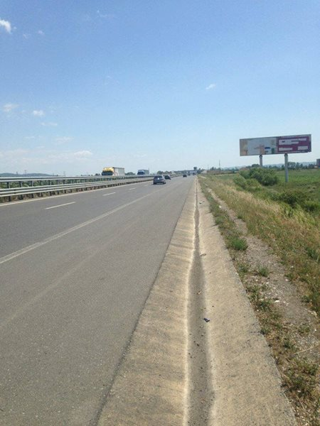
Albánský domeček. Paní domácí zrovna věší prádlo.

Zase tak chudá země to není. Někteří Albánci mají na zahradě i formule.
Letiště v Tiraně. Poslední místo, jak se dostat letadlem domů. Další větší letiště na trase byly až Athény. Dojedu to?
Všude jsou albánské vlajky. Každý má u domu albánskou vlajku. Zatímco někdo si vystačí s vlaječkou malou ...
... někdo má u domu vlaječku o něco větší.
Ty vlajky nejsou tak úplně bezvýznamné. Albánci jsou enormně vlastenečtí a řeknou vám, že žijí v nejlepší zemi na světě a mají i nejlepší práci, ať dělají cokoliv. Samozřejmě je to na evropské poměry velmi chudá země a lidé, kteří žijí pod hranicí chudoby, by asi takto nemluvili. Ale Běžný Albánec™ to tak vnímá.
Mezi Albánií a Českem je jedna zajímavá spojitost, a to jsou tyhle bunkry. Když bylo v roce 1968 Československo obsazeno, Albánci na protest vystoupili z Varšavské smlouvy. Protože se báli odplaty ze strany Sovětského svazu, začali stavět tyhle bunkry a připravovali se na válku. Celkem jich vystavěli 700 tis. až 1,5 mil.
Boží věc na Tiraně jsou tyhle semafory s odpočítadlem, za jak dlouho se objeví zelená/červená. Ihned tak člověk ví, kdy může přejít cestu.
Škoda jen, že jimi nikdo neřídí. Pokud zastavíte v Albánii na červené, lidi za vámi hned začnou troubit. „Jeeeď, vidíš, že máš červenou, tak proč stojíš???!!!". Takže i když jsou všude semafory s odpočítávadlem, na každé křižovatce je ještě policista, který křižovatku řídí. Semafory prostě nemají respekt.
To se ale ukázalo být velmi praktickým, když v Tiraně vypadl proud a všechny semafory přestaly svítit. Zatímco u nás by nastal chaos a nikdo by nedokázal křižovatky přejet, tady se vlastně nic nezměnilo.
V hlavním městě Albánie. Prohlížím si večerní centrum, když se najednou město ponoří do tmy. Místní na to byli naštěstí připraveni a už za světla preventivně zapálili kontejnery.
Málokdo by asi čekal, že přestože je Albánie muslimská země a byla ještě nedávno pod silnou komunistickou diktaturou, tak je nyní velmi silně prozápadně orientovaná. Kromě albánských vlajek jsou všude vlajky EU a velmi často jsou zde i vlajky USA. Mnoho hotelů je pojmenováno po amerických městech. Dokonce hlavní ulice v Tiraně je pojmenována po bývalém americkém prezidentovi.
Albánie je muslimský stát, nějakých 60% až 80% obyvatel jsou muslimové, na mešity tak člověk narazí velmi často.
Je tady ale také téměř 20% křesťanů a kousek od (asi největší muslimské mešity v Tiraně je (asi největší křesťanský kostel.
Budova opery.
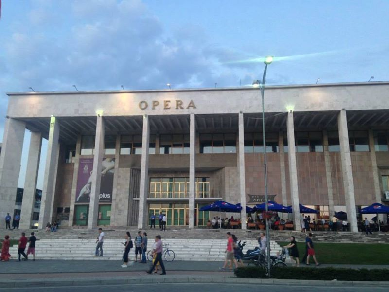
Z mé kolece „poslední fotky před smrtí".
Tirana je plná kropičů. Stojí a kropí. Snem mladého Albánce je jednou pokropit celý svět.
Pyramida v centru Tirany, tady se konal pietní akt za zavražděné Čechy (ještě se k tomu dostanu.
Zdravý spánek ve zdravém těle.
Památník v centru.
Národní muzeum.
Mrakodrap.
Symboly z dob komunistické diktatury.
Devatenáctý den jsem přepsal v jedné vile kousek za městem Golem. Když jsem se ubytoval a kolo nechal před vilou, jdu se podívat na balkón a užívám si pohled na město. Najednou vidím, že kolem mého kola se pohybuje 10 Albánců a začínají mi brát věci z kola, každý vezme něco a odchází pryč. Tak běžím dolů zachránit alespoň nějaké věci. Nakonec zjišťuji, že mi místní chtěli pomoci a odnosili mi brašny do mého pokoje.
Konečně zase u moře.
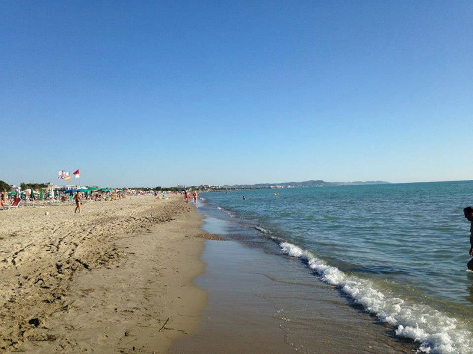
Další foto do mé kolekce „poslední fotka před smrtí". Zatímco Albánci jsou velmi přátelští, o jejich psech to tak úplně neplatí.
Do Albánie jsem přijel v době, kdy zde byly volby. Tady vyhrál týpek jménem Elvis. Ale upřímně, tohle bylo jasné už na začátku. Kdo by proboha nedal hlas někomu, kdo se jmenuje Elvis???
Stavba krásné nové měsity. Oko nejednoho neonacisty by nezůstalo suché.
V Albánii je co kilometr jedna benzinka. Kastráti jsou všude v Albánii.
Albánské kuchyně/koupelny.
Ve Fieru mi došly peníze, a tak jsem začal hledat bankomat. Nejprve se mi snažil pomoci jeden starší pán, ale bez úspěchu. Tak zastavil nějaké dvě další paní, ale ani ty nevěděly, kam mě navigovat. A tak začaly ty dvě paní spolu s předchozím pánem zastavovat další lidi a ptát se na bankomat. A tak dál až jsme se dostali k autoservisu, kde věděli. Týpci naskočili na motorky a se zbytkem Fieru jsme jeli hledat bankomat. Po dvou kilometrech jsme ho našli a já si mohl vybrat hotovost.
Ten albánský klid mi chybí. Albánce neodradí od kouření ani to, že jsou na benzince a cca metr od nich je rozlitý benzín... no co, když vybouchne a shoří, postaví se nová!
Snídaně v muslimské rodině. Musím bohužel potvrdit, že jde o krvelačné bestie s cílem vyhladit nevěřící. Jídla mi dali tolik, že to bylo téměř k prasknutí.

Přemýšlel jsem, že si koupím kozu jako suvenýr, prodávali je tady celkem levně. Ale nevešla se mi na nosič :-(
Dosud jsem ukazoval jen Albánii starou a chudou, nicméně existují zde i velmi luxusní turistická centra.
Vlore je jedno z těch top míst, kde jsem byl. Vypadá to tam jako na obrázcích z Floridy. Mnoho palem, luxusní hotely, ale třeba oproti Česku poloviční ceny. Může to být skvělá destinace pro digitální nomády. Je zde levně, kousek odtud jsou hory, díky čemuž jsou tady příjemnější teploty. Kolem jsou pláže.
Ale pořád je to Albánie. Krásná a rozestavěná. Takže na pláži vás může překvapit bagr.
Koupání ve Vlore.
Opouštím Vlor a vzhůru do hor. V dálce je vidět moře.
V albánských horách častý jev. Za zatáčkou jsou krávy. Stojí a koukají. Prostě krávy.
A je to tu. Po úmorných dnech v albánských horách jsem vystoupal konečně na tu poslední horu, která mi ještě zbývala. Tohle bylo nejkrásnější místo za minulý i letošní trip. Skoro 1000 m.n.m a velký sráz až k moři. Vrchol v oblacích. Bohužel přes veškerou snahu se mi nepodařilo místo zachytit na fotografiích tak, jak jsem ho viděl.
A ještě jeden pohled z vrcholu. V dálce by měl být ostrov Korfu. A 50 km odtud po moři je Itálie.

Jedna z velkých výhod Albánie. Kilometrovou nádhernou písčitou pláž jsem měl jen pro sebe.
Azurové moře.
„Hey, I am not the only crazy man!", řekl mi tento německý důchodce na odpověď, odkud a kam že to jedu. Během 35 dní jsem potkal několik podobných cykloturistů, tenhle objížděl celou Evropu.
Prostě Albánie.
Takže teď už je doufám jasné, proč do Albánie začíná jezdit čím dál tím více lidí, víme?
Na druhý břech v Butrintu, cca 100 metrů vzdálený, se dá dostat přes dřevěný trajekt. Oficiálně se na něj vejde i autobus, ale poté, co na něj vjelo auto a vypadalo to, že se převrátí do řeky, bych to rozhodně neriskoval.
Hrady v Butrintu. Přeci jen, když bydlím v docházkové vzdálenosti od Pražského hradu, tak mi tenhle hrad připadá takový ... malý.
Albánské cesty první třídy.
Dvacátý čtvrtý den na hranicích mezi Albánií a Řeckem. V Chorvatsku mě varovali před Černou Horou. V Černé Hoře mě varovali před Albánií. A v Albánii mě kvůli bankrotu varovali před Řeckem.
V Albánii se mi líbilo tak, že jsem si jako suvenýr koupil albánskou vlajku. A rozhodl jsem se, že se stanu, jak říkají, velvyslancem albánské krásy a budu vyvracet mýty, které o Albánii kolují.
U mě Albánie začínala ne na nule, ale v těžkých záporných číslech. Od ostatních jsem jen slyšel, že mě tam určitě okradou a nebo alespoň zabijou. Přestože jsem měl nastudovány statistiky a věděl jsem, že je Albánie naprosto stejně bezpečná jako naše země, stejně mě to donutilo zařídit si třeba zvláštní bankovní účet, protože až mě okradou, získají z něj jen pár tisíc a ne vše. Troufám si tvrdit, že značná část lidí má o Albánii naprosto smyšlené představy, podobně jako jsem je měl na začátku i já, opak je ale pravdou. Je to velmi bezpečná, velmi krásná země, která je navíc také výrazně levnější než jiné turistické destinace. Řadu dalších zážitků z Albánie pak popíšu v samostatném cestopise.
Proto mě děsně mrzelo, že první zpráva, kterou jsem po výjezdu z Albánie dostal, byla zpráva o zavraždění českých turistů v Albánii. Dostala se na první místa všech českých internetových serverů, a tak nikomu neušla. Dostal jsem hned 3 sms, kde jsem a jestli žiju. Ach jo. Neměl jsem nakonec mylný dojem? Nechovali se ke mně tak třeba jen díky tomu, že jsem pro ně jako cyklista z Čech působil trochu exoticky?
Ne, pamatuji si ji dobře. V Albánii se strhla bez jakéhokoliv přehánění obrovská vlna solidarity. Jedna z nejznámějších albánských kapel na svém profilu sdílela omluvu Česku, kterou lajkovalo na 25 tis. lidí (uvažme, že je v Albánii 4x méně lidí než v Česku. Tisíce lidí sdílelo omluvu s hashtagem #AlbaniansSaySorryToCzechPeople, v centru Tirany se uskutečnila velká pietní akce, kam dorazilo několik tisíc lidí. I u nás v Česku se každý rok stane několik desítek vražd a část z obětí jsou cizinci, ale nedokážu si představit, že by podobná reakce nastala i u nás. Kor kdyby byli zavražděni muslimští Albánci (protože většina obyvatel Albánie se hlásí k Islámu, lze předpokládát, že mezi těmi, kdo se omlouvali, bylo mnoho muslimů.

Dvacátý čtvrtý den výletu opouštím Albánii a vrhám se do Řecka. Hned po překročení hranic jsem zjistil, že bylo vyhlášeno referendum, které nejspíš povede k bankrotu země. Musím ocenit, že Alexis Tsipras pozorně sledoval můj Facebook a počkal na bankrot až budu v Řecku.
Řecko po mém příjezdu zasáhla tropická vedra. Tenhle pes zabral jediný stín široko daleko.
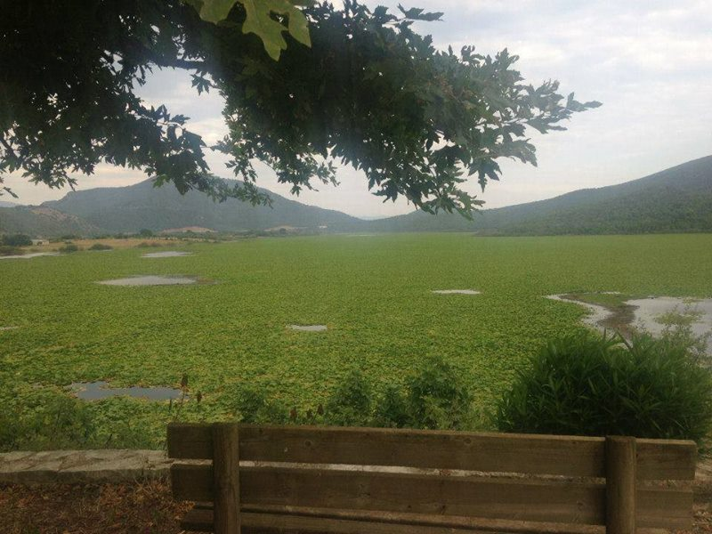
Kdybych si občas nepřečetl Idnes, vůbec bych nevěděl o tom, že nějaká krize v Řecku je. První noc v Řecku jsem strávil u téhle paní, která byla naprosto bez sebe, když zjistila, jakou trasu mám na kole za sebou. Albánci byli velice nesmělí, což se rozhodně o Řecích a Řekyních říci nedá. Během prvních 10 minut mě tato paní třikrát objala.
Až pojedete do Řecka, nezapomeňte na instalaci klávesnice s řeckými písmeny do mobilu. Heslo k wifi jinak nezadáte.
Dvacátý šestý den a spánek na pláži.
V Preveze je podvodní tunel, který spojuje oba břehy. Věděl jsem, že je pro cyklisty nepřístupný, ale říkal jsem si, že to musí mít nějak vyřešeno, protože objížďka je tak na 100 km cesty. Když jsem přijel k tunelu a chtěl do něj vjet, najednou na mě tunel promluvil. Scéna jak z Big Brothera. Pochytil jsem jen informaci, že tunel není pro cyklisty přístupný. Chvíli čekám a pokračuji dále do tunelu, ale opět na mě tunel promluví. Nasraně kolo otáčím a Řekové se ocitají pod těžkou palbou sprostých slov, za které by se nemusel stydět ani český prezident.
Naštěstí za chvíli ke mně přijíždí auto a řidič mi říká, že mě tunelem převeze. Takže se těch 500 metrů svezu autem. Za tu dobu tunelem žádné auto neprojelo a vedle byl asi dva metry široký chodník, kterým jsem mohl klidně projít. Ale asi by to bylo nebezpečné, třeba bych se cestou ztratil nebo tak něco. Prostě rozkaz zněl jasně: žádný cyklista v tunelu! Začíná mi chybět Albánie a jejich „hey, you are in Albania, it is not a problem!".
Dva psi (vlevo venčí stádo krav (vpravo.
Večer si jdu zaplavat ještě v cyklistickém a nejednou proti mě plave metrová želva.
- "Ty vole, želva!", říkám si.
- "Ty vole, cyklista!", říká si želva.
A oba plaveme dále.
Jako správný Řek jsem se byl zúčastnit i demonstrace za ANO nebo NE v referendu. Pro cizince tam mohly běhat titulky v angličtině. Nicméně byla to nuda, ani po hodině jsme nezačali zapalovat autobusy, takže jsem šel spát.
Horskými průsmyky na Peloponés.
V Řecku tou dobou nefungovaly bankomaty, takže nejoblíbenější společenská hra tady v Řecku byla Najdi bankomat, kde jsou bankovky. Hráli všichni od 3 do 99 let.
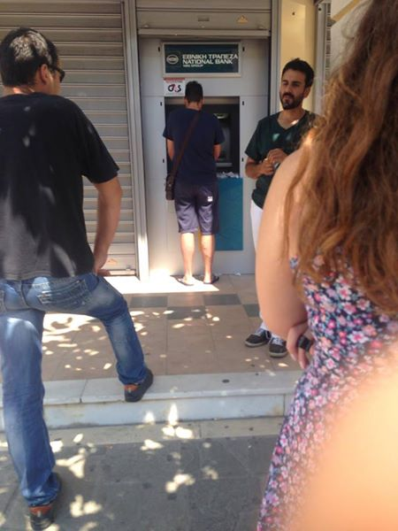
První pohled na Peloponés. Už jsem fakt blízko.
Přejezd přes most na Peloponés.
Po 29 dnech konečně Peloponés. V dálce je už cítit pot athénských demonstrantů, do hlavního města jsou to dva dny cesty. Zítra je však přede mnou ten nejtěžší úkol celého výletu: jaké šampaňské vybrat pro poslední etapu ve stylu Tour de France?
Moje tempo nebylo úplně stíhací, ale tuhle stíhačku jsem si musel vyfotit.
Kdepak budu dnes spát?
Noc před poslední etapou do Athén.
Titanik cca 20 km od Athén.
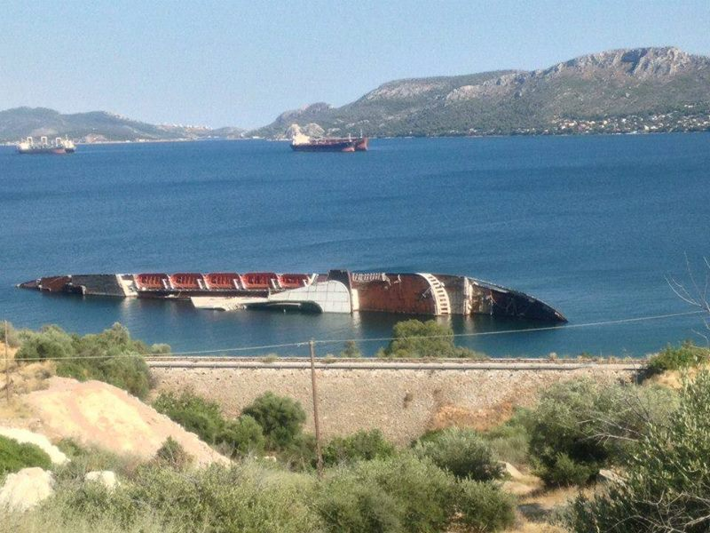
Athény, Acropolis. Mission completed!
Celkem 2305 km, 31 dní, z toho 26 cyklistických. Průměr 88 km na den, 11 dní bylo přes 100 km. Nejvíce dnes, 145 km.
Každý den jsem průměrně ztratil 0,6 kg váhy, a to navzdory večeřím, které obsahovaly i 4 pizzy (při té 4. si mě přišel vyfotit kuchař.
Téměř každý den bylo hezky, pouze jednou pršelo. S výjimkou dvou dní bylo každý den 30+ stupňů.
Nejvýš jsem byl v 1000 m. n. m, a to v albánských horách. Celkově jsem přibližně dvakrát vyjel na Mt. Everest.
I bez přípravy to jde.
Příští rok zase dále, z Athén do Íránu, do Teheránu. Teď ale nechci alespoň rok žádné kolo vidět!
Poslední tři dny padly na prohlídku Athén. Protože v Athénách si teď zvykají na život bez peněz, tak byla městská hromadná doprava zdarma.
Hlavní dominanta celých Athén, Acropolis a Pantheon.
Pantheon podruhé.
Divadlo Héróda Attika.
Chrám Erechtheum.
Porno pro dámy v muzeu Acropolis.
Olympijský stadion, kde byly první novodobé hry v roce 1896.
Náměstí Syntagma.
Přístav Piraeus.
Athénské metro.
Boží věc na athénském metru, ve vlacích vám tyhle cedulky ukazují, ve které stanici přesně jste. Až budeme kvůli splácení dluhů brát nějaké věci z Athén do zástavy, Česko by si mělo vzít tyhle metrovlaky.
A jsme téměř na konci. Zbývá zabalit, s Uberem dojet na letiště v Athénách, zaletět do Prahy a s Liftágem dojet domů. Bylo to rozhodně nejzajímavějších, nejintenzivnějších a nejnáročnějších 35 dní v mém životě.
Selfíčko na závěr. Celá trasa na adrese http://do-athen.jdem.cz/
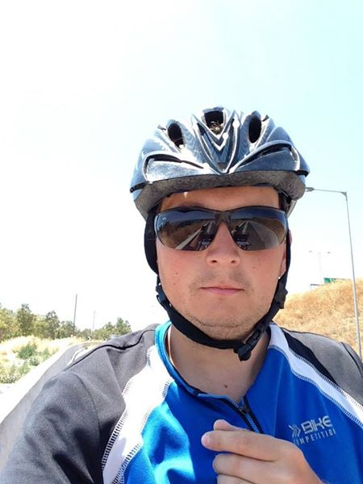
Goodbye, Athéns <3
And see you in 2016!